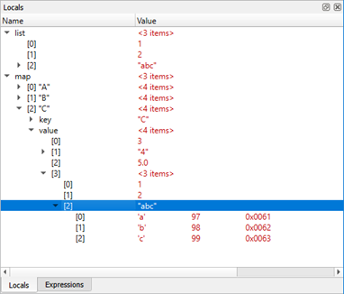

Interacting with the Debugger
You can use the Qt Creator Debug mode to inspect the state of your application while debugging. You can interact with the debugger in several ways, including the following:
- Go through a program line-by-line or instruction-by-instruction.
- Interrupt running programs.
- Set breakpoints.
- Examine the contents of the call stack.
- Examine and modify contents of local and global variables.
- Examine and modify registers and memory contents of the debugged program.
- Examine the list of loaded shared libraries.
- Disassemble sections of code.
Qt Creator displays the raw information provided by the native debuggers in a clear and concise manner with the goal to simplify the debugging process as much as possible without losing the power of the native debuggers.
In addition to the generic IDE functionality provided by stack view, views for locals and expressions, registers, and so on, Qt Creator includes features to make debugging Qt-based applications easy. The debugger plugin understands the internal layout of several Qt classes, for example, QString, the Qt containers, and most importantly QObject (and classes derived from it), as well as most containers of the C++ Standard Library and some GCC extensions. This deeper understanding is used to present objects of such classes in a useful way.
Using the Debugger
In Debug mode, you can use several views to interact with the program you are debugging. The availability of views depends on whether you are debugging C++ or QML. Frequently used views are shown by default and rarely used ones are hidden. To change the default settings, select Window > Views, and then select views to display or hide. Alternatively, you can enable or disable views from the context menu of the title bar of any visible debugger view.

You can drag and drop the views in Qt Creator to new positions on the screen. The size and position of views are saved for future sessions. Select Window > Views > Reset to Default Layout to reset the views to their original sizes and positions.
To save space on the screen, select Window > Views > Automatically Hide View Titlebars.
Once the program starts running under the control of the debugger, it behaves and performs as usual. You can interrupt a running C++ program by selecting Debug > Interrupt. The program is automatically interrupted when a breakpoint is hit.
Once the program stops, Qt Creator:
- Retrieves data representing the call stack at the program's current position.
- Retrieves the contents of local variables.
- Examines Expressions.
- Updates the Registers, Modules, and Disassembler views if you are debugging the C++ based applications.
You can use the Debug mode views to examine the data in more detail.
You can use the following keyboard shortcuts:
- To finish debugging, press Shift+F5.
- To execute a line of code as a whole, press F10 (Command+Shift+O on macOS).
- To step into a function or a subfunction, press F11 (Command+Shift+I on macOS).
- To leave the current function or subfunction, press Shift+F11 (Command+Shift+T on macOS).
- To continue running the program, press F5.
- To run to the line containing the cursor, press Ctrl+F10 (Shift+F8 on macOS).
- To run to the selected function when you are stepping into a nested function, press Ctrl+F6.
It is also possible to continue executing the program until the current function completes or jump to an arbitrary position in the current function.
Setting Breakpoints
A breakpoint represents a position or sets of positions in the code that, when executed, interrupts the program being debugged and passes the control to you. You can then examine the state of the interrupted program, or continue execution either line-by-line or continuously.
Qt Creator shows breakpoints in the Breakpoints view which is enabled by default. The Breakpoints view is also accessible when the debugger and the program being debugged is not running.

You can associate breakpoints with:
- Source code files and lines
- Functions
- Addresses
- Throwing and catching exceptions
- Executing and forking processes
- Executing some system calls
- Changes in a block of memory at a particular address when a program is running
- Emitting QML signals
- Throwing JavaScript exceptions
The interruption of a program by a breakpoint can be restricted with certain conditions.
You can set and delete breakpoints before the program starts running or while it is running under the debugger's control. Breakpoints are saved together with a session.
Adding Breakpoints
To add breakpoints:
- Add a new breakpoint in one of the following ways:
- In the code editor, click the left margin or press F9 (F8 for macOS) at a particular line you want the program to stop.
- In the Breakpoints view, double-click in the empty part of the view.
- In the Breakpoints view, select Add Breakpoint in the context menu.
- In the Breakpoint type field, select the location in the program code where you want the program to stop. The other options to specify depend on the selected location.

- In the Condition field, set the condition to be evaluated before stopping at the breakpoint if the condition evaluates as true.
- In the Ignore field, specify the number of times that the breakpoint is ignored before the program stops.
- In the Commands field, specify the commands to execute when the program stops; one command on a line. GDB executes the commands in the order in which they are specified.
For more information on breakpoints, see Breakpoints, Watchpoints, and Catchpoints in GDB documentation.
Moving Breakpoints
To move the breakpoint, drag and drop a breakpoint marker to another line.
Deleting Breakpoints
To delete breakpoints:
- Click the breakpoint marker in the text editor.
- Select the breakpoint in the Breakpoints view and press Delete.
- Select Delete Breakpoint in the context menu in the Breakpoints view.
Enabling and Disabling Breakpoints
To temporarily disable a breakpoint without deleting it and losing associated data like conditions and commands:
- Right-click the breakpoint marker in the text editor and select Disable Breakpoint.
- Select the breakpoint in the Breakpoints view and press Space.
- Select Disabled Breakpoint in the context menu in the Breakpoints view.
A disabled breakpoint is marked with a hollow read circle in the text editor and the Breakpoint view.
To re-enable a temporarily disabled breakpoint:
- Right-click the marker of a disabled breakpoint in the text editor and select Enable Breakpoint.
- Select a disabled breakpoint in the Breakpoints view and press Space.
- Select Disabled Breakpoint in the context menu in the Breakpoints view.
With the notable exception of data breakpoints, breakpoints retain their enabled or disabled state when the debugged program is restarted.
Setting Data Breakpoints
A data breakpoint stops the program when data is read or written at the specified address.
To set a data breakpoint at an address:
- Right-click in the Breakpoints view to open the context menu, and select Add Breakpoint.
- In the Breakpoint type field, select Break on data access at fixed address.
- In the Address field, specify the address of the memory block.
- Select OK.
If the address is displayed in the Locals or Expressions view, you can select Add Data Breakpoint at Object's Address in the context menu to set the data breakpoint.
Data breakpoints will be disabled when the debugged program exits, as it is unlikely that the used addresses will stay the same at the next program launch. If you really want a data breakpoint to be active again, re-enable it manually.
Viewing Call Stack Trace
When the program being debugged is interrupted, Qt Creator displays the nested function calls leading to the current position as a call stack trace. This stack trace is built up from call stack frames, each representing a particular function. For each function, Qt Creator tries to retrieve the file name and line number of the corresponding source file. This data is shown in the Stack view.
Since the call stack leading to the current position may originate or go through code for which no debug information is available, not all stack frames have corresponding source locations. Stack frames without corresponding source locations are grayed out in the Stack view.
If you click a frame with a known source location, the text editor jumps to the corresponding location and updates the Locals and Expressions views, making it seem like the program was interrupted before entering the function.
To find out which QML file is causing a Qt Quick 2 application to crash, select Load QML Stack in the context menu in the Stack view. The debugger tries to retrieve the JavaScript stack from the stopped executable and prepends the frames to the C++ frames, should it find any. You can click a frame in the QML stack to open the QML file in the editor.
Local Variables and Function Parameters
The Locals view consists of the Locals pane and the Return Value pane (hidden when empty).

Whenever a program stops under the control of the debugger, it retrieves information about the topmost stack frame and displays it in the Locals view. The Locals pane shows information about parameters of the function in that frame as well as the local variables. If the last operation in the debugger was returning from a function after pressing Shift+F11, the Return Value pane displays the value returned by the function.
Evaluating Expressions
To compute values of arithmetic expressions or function calls, use expression evaluators in the Expressions view. To insert a new expression evaluator, either double-click on an empty part of the Expressions or Locals view, or select Add New Expression Evaluator from the context menu, or drag and drop an expression from the code editor.

Note: Expression evaluators are powerful, but slow down debugger operation significantly. It is advisable to not use them excessively, and to remove unneeded expression evaluators as soon as possible.
Expression evaluators are re-evaluated whenever the current frame changes. Note that functions used in the expressions are called each time, even if they have side-effects.
All backends support simple C and C++ expressions. Functions can be called only if they are actually compiled into the debugged executable or a library used by the executable. Most notably, inlined functions such as most operator[] implementations of standard containers are typically not available.
When using GDB or LLDB as backend, a special ranged syntax can be used to display multiple values with one expression. A sub-expression of form foo[a..b] is split into a sequence of individually evaluated expressions foo[a], ..., foo[b].
Compound variables of struct or class type are displayed as expandable in the view. Expand entries to show all members. Together with the display of value and type, you can examine and traverse the low-level layout of object data.
| Note: |
| GDB and LLDB, and therefore Qt Creator's debugger, also work for optimized builds on Linux and macOS. Optimization can lead to re-ordering of instructions or removal of some local variables, causing the Locals and Expressions view to show unexpected data. |
| The debug information provided by GCC does not include enough information about the time when a variable is initialized. Therefore, Qt Creator can not tell whether the contents of a local variable contains "real data", or "initial noise". If a QObject appears uninitialized, its value is reported as not in scope. Not all uninitialized objects, however, can be recognized as such. |
The Locals and Expressions views also provide access to the most powerful feature of the debugger: comprehensive display of data belonging to Qt's basic objects. For example, in case of QObject, instead of displaying a pointer to some private data structure, you see a list of children, signals and slots.
Similarly, instead of displaying many pointers and integers, Qt Creator's debugger displays the contents of a QHash or QMap in an orderly manner. Also, the debugger displays access data for QFileInfo and provides access to the "real" contents of QVariant.
Right-click in the Locals or the Expressions view to open a context menu that provides additional options for viewing data. The available options depend on the type of the current items, and are provided by the Debugging Helpers. Typically, string-like data, such as QByteArray and std::string, offer a selection of encodings, as well as the possibility to use a full editor window. Map-like data, such as QMap, QHash, and std::map, offer a compact option using the name column for keys, resulting in a concise display of containers with short keys, such as numbers or short strings. For example, to expand all the values of QMap, select Change Value Display Format > Compact.
You can use the Locals and Expressions view to change the contents of variables of simple data types, for example, int, float, QString and std::string when the program is interrupted. To do so, click the Value column, modify the value with the inplace editor, and press Enter (or Return).
To change the complete contents of QVector or std::vector values, type all values separated by commas into the Value column of the main entry.
You can enable tooltips in the main editor displaying this information. For more information, see Showing Tooltips in Debug Mode.
Note: The set of evaluated expressions is saved in your session.
Directly Interacting with Native Debuggers
In some cases, it is convenient to directly interact with the command line of the native debugger. In Qt Creator, you can use the left pane of the Debugger Log view for that purpose. When you press Ctrl+Enter, the contents of the line under the text cursor are sent directly to the native debugger. Alternatively, you can use the line edit at the bottom of the view. Output is displayed in the right pane of the Debugger Log view.
Note: Usually, you do not need this feature, because Qt Creator provides you with better ways to handle the task. For example, instead of using the GDB print command from the command line, you can evaluate an expression in the Expressions view.
Debugging C++ Based Applications
The following sections describe additional debugging functions that apply only to debugging C++.
Starting the Debugger from the Command Line
You can use the Qt Creator debugger interface from the command line. To attach it to a running process, specify the process ID as a parameter for the -debug option. To examine a core file, specify the file name. Qt Creator executes all the necessary steps, such as searching for the binary that belongs to a core file. To connect to a debug server, specify the server location and port number.
For example:
C:\qtcreator\bin>qtcreator -debug 2000C:\qtcreator\bin>qtcreator -debug core=core.2000C:\qtcreator\bin>qtcreator -debug some.exe,core=coreC:\qtcreator\bin>qtcreator -debug server=some.dot.com:4251
For more information, see Using Command Line Options.
Stepping into Frameworks in macOS
In macOS, external libraries are usually built into so-called Frameworks, which may contain both release and debug versions of the library. When you run applications on the macOS desktop, the release version of Frameworks is used by default. To step into Frameworks, select the Use debug versions of Frameworks option in the project run settings.
Viewing Threads
If a multi-threaded program is interrupted, the Threads view or the combobox named Threads in the debugger status bar can be used to switch from one thread to another. The Stack view adjusts itself accordingly.
Viewing Modules
The Modules view displays information that the debugger plugin has about modules included in the application that is being debugged. A module is a dynamic link library (.dll) in Windows, a shared object (.so) in Linux, and a dynamic shared library (.dylib) in macOS.
In addition, the view displays symbols within the modules and indicates where each module was loaded.
Right-click the view to open a context menu that contains menu items for:
- Updating the module list
- Loading symbols for modules
- Examining modules
- Editing module files
- Showing symbols in modules
- Showing dependencies between modules (Windows only)
By default, the Modules view is hidden.
Viewing Source Files
The Source Files view lists all the source files included in the project. If you cannot step into an instruction, you can check whether the source file is actually part of the project, or whether it was compiled elsewhere. The view shows the path to each file in the file system.
Right-click the view to open a context menu that contains menu items for reloading data and opening files.
By default, the Source Files view is hidden.
Viewing Disassembled Code
The Disassembler view displays disassembled code for the current function.
The Disassembler view is useful for low-level commands for checking single instructions, such as Step Into and Step Over. By default, the Disassembler view is hidden.
To access the Disassembler view, check Debug > Operate by Instruction while the debugger is running. Alternatively, click the  (Operate by Instruction) tool button on the debugger tool bar.
(Operate by Instruction) tool button on the debugger tool bar.
Viewing and Editing Register State
The Registers view displays the current state of the CPU registers. Depending on the CPU type, there will be different registers available. The values of registers that recently have changed are highlighted in red and empty register values as well as leading zeroes are grayed out.
In addition it is possible to edit the content of registers while the program is stopped. This applies to both General-purpose and Special-purpose registers. Registers can be edited in the standard condensed view or in their particular parts if the register is displayed expanded.
By default, the Registers view is hidden.